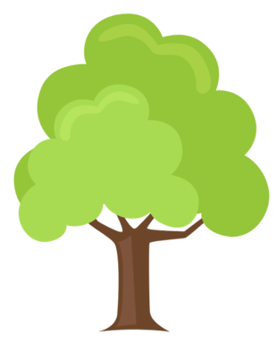

<section class="about-section">
  <div class="container">
    <div class="row">
      <div class="col about-image-container">
        
      </div>
      <div class="col about-text">
        <h1 class="display-3">About</h1>
        <hr />
        <p>
          Ecology is not synonymous with environmentalism, natural history, or environmental science. It overlaps with
          the closely related sciences of evolutionary biology, genetics, and ethology. An important focus for
          ecologists is to improve the understanding of how biodiversity affects ecological function.
        </p>
        <p>
          Share on social media:
        </p>
        <div class="social row mt-4 justify-content-center">
          <div class="col" style="text-align:center">
            <a href="https://www.facebook.com/sharer/sharer.php?u=https%3A%2F%2Fmaterial.angular.io%2F" target="_blank">
              <fa-icon class="fb-icon" (click)="fbShare()" [icon]="faFacebook"></fa-icon>
            </a>
          </div>
          <div class="col" style="text-align:center">
            <a href="https://www.linkedin.com/shareArticle?mini=true&url=https%3A//material.angular.io/&title=ZELENO%20SKOPJE&summary=&source="
              target=_blank>
              <fa-icon class="linkedin-icon" [icon]="faLinkedin"></fa-icon>
            </a>
          </div>
          <div class="col" style="text-align:center">
            <a href="https://twitter.com/intent/tweet?url=https%3A%2F%2Fmaterial.angular.io%2F&text=Zeleno%20Skopje" target="_blank">
              <fa-icon class="twitter-icon" [icon]="faTwitter"></fa-icon>
            </a>
          </div>
        </div>
      </div>
    </div>
  </div>
</section>